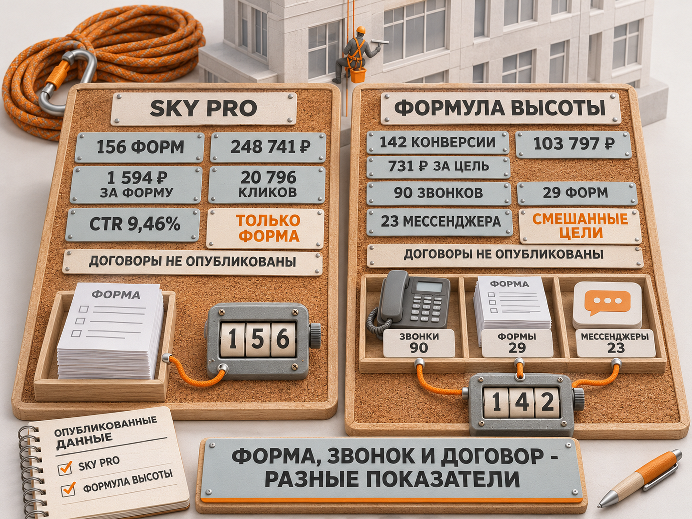
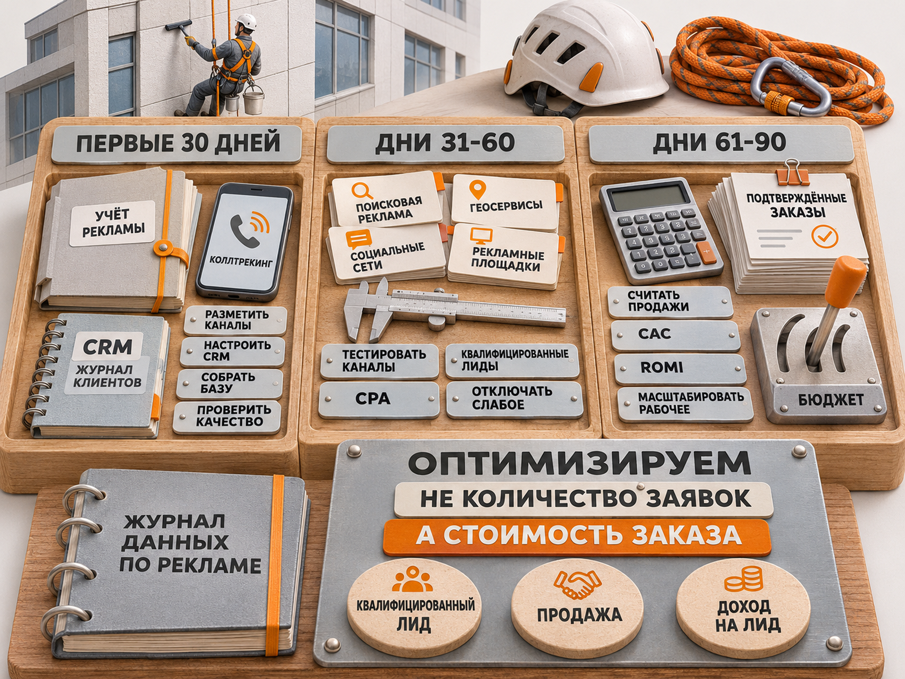

Блог о платном трафике
Продвижение промышленного альпинизма: кейсы, каналы и прогноз на 2027 год
Промышленный альпинизм нельзя продвигать по одной красивой цифре в отчёте. Дешёвая конверсия может оказаться звонком без задачи, переходом в мессенджер или формой без объекта и сроков. Поэтому в этой нише нужно считать не только лиды, а квалифицированные обращения, продажи, стоимость привлечения клиента и доход на одного пользователя.
Ниже разобраны три публичных кейса, опубликованных в 2025‑2026 годах. В них разные определения конверсии, поэтому показатели нельзя складывать в одну среднюю норму. После кейсов - практическая схема запуска Яндекс Директа, Авито и дополнительных каналов, а также расчётный прогноз для первых 90 дней.
Что важно знать о нише промышленного альпинизма
Заказчик промышленных высотных работ редко покупает абстрактную услугу. Ему нужно решить конкретную задачу: отмыть фасад, загерметизировать швы, очистить кровлю, смонтировать оборудование, поднять груз или выполнить ремонт на высоте. Для юридических лиц к этому добавляются площадь объекта, допуски, техника безопасности, сроки, документы и порядок согласования.
Из этого следуют четыре требования к рекламе:
- отдельная посадочная страница под каждую значимую услугу;
- фотографии реальных объектов и понятное описание технологии работ;
- форма, которая фиксирует объект, задачу, объём и сроки;
- CRM, где видно не только источник обращения, но и его качество и результат продажи.
Если оставить одну общую страницу «промышленный альпинизм» и одну кнопку «Оставить заявку», рекламная система получит мало информации для обучения, а менеджер будет вручную выяснять исходные данные.
Что показывают свежие кейсы промальпа
В открытых публикациях есть три полезных примера. В кейсе Sky Pro из Тюмени показана оптимизация по одной квалифицирующей форме. В кейсе «Формула высоты» в одну цель включены звонки, формы и переходы в мессенджер. В кейсе «Альпирус» опубликованы не только обращения, но и ориентировочное количество сделок.
| Кейс | Период и география | Рекламный бюджет | Что считали конверсией | Опубликованный результат | Продажи и договоры |
|---|---|---|---|---|---|
| Sky Pro | 07.07.2025 - 08.10.2025, Тюмень | 248 741,03 ₽ | 156 полностью заполненных квалифицирующих форм | 1594,49 ₽ за форму, 20 796 кликов, CTR 9,46% | Договоры не опубликованы |
| «Формула высоты» | 03.01.2026 - 12.03.2026, Москва и область | 103 797,06 ₽ | 142 смешанные цели: 90 звонков, 29 форм, 23 мессенджера | 730,97 ₽ за цель, 1584 клика, CTR 6,70% | Договоры не опубликованы |
| «Альпирус» | 3 месяца после запуска, Москва и область | 80 000 ₽ в месяц | Около 237 обращений в месяц | Около 337 ₽ рекламного расхода на обращение, расчёт автора | Около 15 сделок в месяц, около 6% обращений до сделки |
Эти цифры нужно читать осторожно. В первом кейсе 156 - это стоимость заполненной формы, а не стоимость договора. Во втором 142 - сумма трёх разных действий, поэтому 730,97 ₽ нельзя называть стоимостью квалифицированного лида без дополнительной проверки. В третьем кейсе можно посчитать рекламный расход на опубликованную сделку: 80 000 / 15 = около 5333 ₽. Это не полный CAC, потому что в нём не учтены работа сайта, ведение рекламы, зарплата менеджера и другие расходы.

Кейс Sky Pro: одна квалифицирующая форма вместо набора микроконверсий
В кейсе Sky Pro рекламный период составил 07.07.2025 - 08.10.2025. Расход - 248 741,03 ₽. Основной целью сделали полную отправку сложной формы, где пользователь указывал объект, вид работ, объём, сроки и дополнительные условия. За период получили 156 таких форм по 1594,49 ₽.
В отчёте также указаны 20 796 кликов и CTR 9,46%. При этом звонки и переходы в мессенджеры не включали в итоговую цель. Это важное ограничение: кейс показывает, сколько стоила одна однородная форма, но не говорит, сколько стоил договор и сколько денег принесли обращения.
Практический вывод для промальпа простой: если в форме можно зафиксировать задачу и параметры объекта, она полезнее для оптимизации, чем любая короткая отправка номера телефона. Но даже такая форма остаётся промежуточным показателем. Её нужно связать с квалификацией в CRM и дальнейшим результатом.
Кейс «Формула высоты»: дешёвая цель не равна дешёвому лиду
В кейсе «Формула высоты» за период с 03.01.2026 по 12.03.2026 потратили 103 797,06 ₽. Кампания получила 142 конверсии при средней цене цели 730,97 ₽. Внутри результата были 90 звонков, 29 форм и 23 перехода в мессенджер.
Такой отчёт полезен для оценки работы рекламной кампании, но его нельзя напрямую сопоставлять с 156 формами Sky Pro. Звонок, форма и переход в мессенджер требуют разной обработки. Более того, сам факт звонка не показывает, был ли у человека объект, подходила ли ему география и дошёл ли запрос до расчёта.
Правильная интерпретация такая: 730,97 ₽ - стоимость смешанной цели в конкретной кампании. Чтобы получить CPA продажи, нужны данные CRM о заключённых договорах и рекламные расходы, относящиеся к той же когорте обращений.
Кейс «Альпирус»: опубликована связь обращений и сделок
В кейсе «Альпирус» указаны бюджет 80 000 ₽ в месяц, около 237 обращений в месяц и около 15 сделок в месяц. Автор кейса сообщает, что до сделки доходило примерно 6% обращений. Арифметика даёт около 337 ₽ рекламного расхода на обращение и около 5333 ₽ на опубликованную сделку.
Это самый полезный для бизнеса формат отчёта из трёх примеров, потому что он показывает промежуточную связь с продажей. Но и здесь не опубликованы средний чек, маржинальность, состав расходов на сайт и ведение рекламы. Поэтому 5333 ₽ нельзя выдавать за полный CAC или стоимость договора для любой компании.
Какие показатели считать вместо одного CPL
Минимальная схема измерения должна разделять пять уровней результата.
- Обращение - любое зафиксированное действие: форма, звонок, чат или сообщение.
- Квалифицированный лид - обращение, где подтверждены услуга, география, объект и реальная задача.
- Продажа - согласованный заказ с зафиксированной суммой или подписанным договором.
- CAC - все расходы на привлечение одного клиента или сделки по выбранной методике.
- ROMI - возврат маркетинговых инвестиций с учётом выбранной модели выручки или маржи.
Основные формулы:
- CPL = рекламный бюджет / все обращения;
- стоимость квалифицированного лида = рекламный бюджет / квалифицированные лиды;
- CPA продажи = рекламный бюджет / продажи;
- CAC = все расходы на маркетинг и продажи / новые клиенты;
- доход на лид = выручка от атрибутированных продаж / количество лидов;
- ROMI = (маржинальная прибыль от рекламы - расходы на маркетинг) / расходы на маркетинг × 100%.
Если менеджер не отмечает качество обращения, реклама оптимизируется по шумному сигналу. Если CRM не передаёт подтверждённые продажи в аналитику, нельзя понять, какая кампания привела деньги. О том, как связать рекламные расходы, CRM и продажи, полезно прочитать в материале о сквозной аналитике Яндекс Директа.
Как передавать качество обращений в рекламу
В CRM достаточно завести обязательные статусы: новое обращение, квалифицированный лид, расчёт подготовлен, заказ подтверждён, договор или оплата. Для каждой записи нужно сохранять источник, кампанию, объявление, услугу, город, дату и сумму заказа.
Для Яндекс Директа целевым действием на старте может быть заполненная квалифицирующая форма. После накопления данных можно передавать более глубокую офлайн-конверсию - например, подтверждённый расчёт или продажу. Не следует включать в одну цель все возможные клики, звонки и чаты только ради роста количества конверсий.
Настройка оплаты за конверсии имеет смысл только тогда, когда цель действительно описывает полезный результат и в ней достаточно объёма для обучения. Подробное объяснение механики есть в статье об оплате за конверсии в Яндекс Директе.
Какие каналы использовать кроме Яндекс Директа
Яндекс Директ логично сделать базовым каналом для сформированного спроса. Но промышленный альпинизм нельзя оставлять только на поисковых запросах. В разных городах и услугах полезное распределение будет отличаться, поэтому каналы нужно запускать с отдельными метками и сравнивать по квалифицированным обращениям.
Авито: отдельные объявления под задачу и город
Авито стоит тестировать одним из первых дополнительных каналов. Пользователь уже находится внутри площадки объявлений и может искать исполнителя под конкретную работу. Важно не размещать одно общее объявление на все услуги. Лучше создать отдельные карточки для мойки фасадов, герметизации швов, очистки кровли, монтажа и подъёма грузов.
В каждом объявлении нужны реальные фотографии, город работы, диапазон задач, ограничения по высоте и понятный способ получить расчёт. Платное продвижение объявления можно сравнивать с обычным размещением по стоимости квалифицированного обращения, а не по числу просмотров. Отдельно проверяйте платную Авито Рекламу и внутреннее продвижение объявлений. Механика и доступные форматы меняются, поэтому перед запуском нужно сверить текущие условия площадки. Базовые принципы работы с этим каналом разобраны в материале о настройке Авито Рекламы.
Карты и локальная выдача
Карточки компании в Яндекс Картах и 2ГИС особенно важны, когда заказчик ищет исполнителя в конкретном городе. Заполните услуги, географию, фотографии объектов, режим работы, телефон и описание работ для юридических лиц. Отдельно отслеживайте звонки из карточек и сообщения, чтобы не смешивать их с Директом.
Карты не всегда дают большой объём обращений, но могут приводить людей с высокой локальной готовностью. Для оценки используйте стоимость квалифицированного звонка и долю подтверждённых задач.
SEO и полезные страницы
Органический поиск подходит для задач, которые пользователь изучает заранее: герметизация межпанельных швов, ремонт фасада, очистка кровли, монтаж на высоте, требования к подрядчику и расчёт стоимости. Для каждой услуги нужна отдельная страница с примерами объектов, условиями работ и формой с параметрами задачи.
SEO не заменяет платную рекламу в первые недели, но постепенно снижает зависимость от клика. Его результат нужно считать не только визитами, а обращениями, квалификацией и продажами по органическому источнику.
Партнёрские продажи и прямой B2B-контакт
Для промальпа полезны управляющие компании, ТСЖ, генподрядчики, клининговые фирмы, подрядчики по фасадам и обслуживающие организации. Здесь работает не массовая рассылка, а понятное предложение для конкретной группы: портфолио объектов, документы, допуски, сроки выезда и порядок расчёта.
В CRM такие обращения нужно помечать отдельным источником. Иначе сделки от партнёров будут ошибочно приписаны органике или прямому трафику.
Контент и доказательство компетенции
Фотографии работы на высоте, видео процесса, разбор объекта и объяснение технологии помогают снять страх заказчика. В этой нише контент должен отвечать на практические вопросы: кто допускается на объект, как обеспечивается безопасность, какие документы получает заказчик, как оценивается объём и почему цена зависит от условий.
Контент можно использовать в SEO, карточках Авито, социальных сетях, ретаргетинге и коммерческих предложениях. Его задача - повышать доверие и квалифицировать спрос, а не просто наращивать охват.
Как запускать рекламу промышленного альпинизма
Шаг 1. Собрать экономику сделки
До запуска зафиксируйте средний чек, валовую маржу, допустимый CAC, минимальную сумму заказа и долю обращений, которую менеджер способен обработать. Если этих данных нет, начните с фактических продаж за последние месяцы и не называйте случайную цену лида целевым ориентиром.
Допустимый CPL можно оценить от допустимого CAC и конверсии квалифицированного лида в продажу. Например, при допустимом CAC 30 000 ₽ и конверсии квалифицированного лида в продажу 10% верхняя граница CPL составляет 3000 ₽. Это расчётная граница, а не обещание результата.
Шаг 2. Подготовить посадочные страницы
Сделайте отдельные страницы под ключевые услуги и географию. На первой части страницы должны быть видны услуга, регион, тип объекта, подтверждение опыта и способ получить расчёт. В форме спросите только то, что действительно помогает оценить задачу: тип работ, адрес или город, площадь или объём, срок и контакт.
Шаг 3. Запустить Поиск и отдельные тесты РСЯ
Поиск собирает сформированный спрос по коммерческим запросам. РСЯ можно тестировать отдельной кампанией с собственными креативами и ограничениями, не смешивая её показатели с поиском. В каждой группе нужны минус-фразы по вакансиям, обучению, самостоятельному выполнению работ и информационным запросам.
Первый отчёт собирайте по кампании, услуге, географии, типу конверсии и статусу в CRM. Не отключайте канал только из-за дорогого клика и не масштабируйте его только из-за дешёвой цели.
Шаг 4. Добавить Авито и локальные площадки
После подготовки базовых объявлений на Авито запускайте продвижение отдельными тестами. Для каждой услуги назначьте собственный номер или метку, чтобы видеть, откуда пришёл звонок. Карты, 2ГИС и партнёрские источники также должны иметь отдельные значения в CRM.
Шаг 5. Считать продажи и пересматривать бюджет
Раз в неделю проверяйте не только расходы и CPL, но и количество квалифицированных лидов, расчётов, продаж, CPA продажи, CAC и доход на пользователя. Кампания с более дорогим лидом может быть выгоднее, если у неё выше доля продаж и средняя маржа.
Прогноз бюджета и результата на первые 90 дней
Свежие кейсы не дают единой рыночной нормы: в одном случае стоимость квалифицирующей формы составила 1594,49 ₽, в другом смешанная цель стоила 730,97 ₽, а в третьем рекламный расход на опубликованную сделку составил около 5333 ₽. Поэтому прогноз ниже - расчётная модель, а не обещание и не средняя цена по рынку.
Для рабочего сценария возьмём три допущения:
- рекламный бюджет распределяется между Директом, Авито и локальными тестами;
- стоимость квалифицированного лида находится в диапазоне 1600‑2500 ₽;
- конверсия квалифицированного лида в продажу пока неизвестна, поэтому для осторожного расчёта используем 6% как опубликованный ориентир из кейса «Альпирус», а не как норму.
| Месячный бюджет | Расчётная стоимость квалифицированного лида | Расчётные квалифицированные лиды | Продажи при конверсии 6% | Рекламный расход на продажу |
|---|---|---|---|---|
| 100 000 ₽ | 2500 ₽ | 40 | 2‑3 | 33 000‑50 000 ₽ |
| 150 000 ₽ | 2000 ₽ | 75 | 4‑5 | 30 000‑37 500 ₽ |
| 250 000 ₽ | 1600 ₽ | 156 | 9‑10 | 25 000‑27 800 ₽ |
Прогноз строится так: квалифицированные лиды = бюджет / стоимость квалифицированного лида; продажи = квалифицированные лиды × конверсия в продажу; рекламный расход на продажу = бюджет / продажи. В реальном проекте эти расчёты нужно пересобрать после появления собственных данных CRM.

Что проверить перед запуском
Перед пополнением рекламного бюджета пройдите короткий контрольный список:
- в CRM сохраняется источник каждого обращения;
- формы и звонки различаются по типу конверсии;
- статус квалификации заполняется менеджером;
- продажа связана с конкретным обращением;
- договоры и суммы не смешиваются с необработанными лидами;
- рекламные расходы относятся к той же дате и когорте, что и продажи;
- в отчёте отдельно видны Директ, Авито, карты, SEO и партнёры;
- у каждой услуги есть своя посадочная страница и понятный оффер.
Главный вывод
Продвижение промышленного альпинизма в 2027 году стоит строить вокруг качества сигнала и экономики заказа. Яндекс Директ будет основным инструментом для сформированного спроса, Авито стоит отдельно тестировать через объявления и платное продвижение, а карты, SEO, партнёры и контент помогут собирать локальный и отложенный спрос.
Главный KPI нельзя выбирать по минимальной цене лида. Сначала считайте квалифицированные лиды, затем продажи, CPA, CAC, доход на пользователя и ROMI. Если договоры не передаются в CRM и рекламную аналитику, стоимость продажи остаётся неизвестной, даже когда отчёт показывает сотни дешёвых конверсий.
Для оценки стартовых расходов можно использовать прогноз бюджета в Яндекс Директе, но итоговый бюджет нужно подтверждать собственными данными по квалификации и продажам.